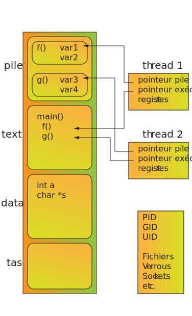

Cours n°1Threads
M4102 - Programmation répartie
Victor Poupet (adapté du cours de M. Molnar)
2022-01-25
Contenu du cours
Processus et tâches
Utilisation concurrentielle des ressources
Problèmes liés à la concurrence
Ressources/sections critiques
Exclusion mutuelle
Outils
Verrous
Barrières
Sémaphores
Synchronisation des processus
Communication entre processus distants
Boîtes aux lettres
Sockets
Modèle client/serveur
Concurrence
Intervalles d'exécution qui se chevauchent
Peut se faire avec un seul processeur
On peut simuler du parallélisme avec du time slicing
Ex :
coroutines
interruptions et attente I/O
processus dans un système d'exploitation multi-tâches
Parallélisme
Exécutions simultanées
Nécessite plusieurs processeurs (un par tâche parallèle)
Ex :
calculs parallèles sur réseau
processeur multi-cœurs
traitement d'images
Processus
Programme en cours d'exécution (un même programme peut être lancé plusieurs fois)
Espace d'adressage propre (chaque processus a sa propre mémoire)
Deux processus peuvent être sur des machines différentes
Peut être interrompu et réactivé en sauvegardant son état
Thread 
Processus légers : subdivisions d'un processus
Partagent l'espace mémoire
Chaque thread a son segment de pile
Threads d'un même processus partagent leur code
Peut être interrompu et réactivé en sauvegardant son état
Communication entre processus
Processus ne partagent pas leurs variables
Plusieurs moyens pour communiquer (IPC) :
signaux
tubes anonymes (pipes )
FIFO (tubes nommés)
Files de messages
Verrous
Sémaphores
Segments de mémoire partagée
Fichiers sur mémoire
Sockets
Cycle d'un processus
Les processus ont 5 états possibles d'exécution :
Nouveau : en cours de création
Prêt : toutes les ressources nécessaires sont disponibles mais pas actuellement exécuté par le CPU
Exécution : en cours d'exécution par le CPU
En attente : ne peut pas poursuivre son exécution (attente clavier, fichier, message d'un autre processus, etc.)
Terminé : l'exécution est finie
Exécution en Java
public class Prog {
public static void main(String[] args){
...
}
}
$ javac Prog.java
$ ls
Prog.class Prog.java
$ java Prog &
$ ps
PID TTY TIME CMD
4232 ttys0 0:00.03 -bash
4295 ttys0 0:00.04 /usr/bin/java Prog
Les programmes en Java sont exécutés par une machine virtuelle (JVM)
Un programme est une classe (.java) avec une méthode statique main
Compilation produit un fichier en langage machine de la JVM (.class)
À l'exécution : nouveau processus qui exécute la JVM qui interprète le code compilé
Processus légers en Java
Gérés par la classe Thread
Peuvent être créés
en héritant de la classe Thread
en implémentant l'interface Runnable
Héritage de Thread
public class Tache extends Thread {
...
public void run() {
... // activité du Thread
}
}
Tache t = new Tache(...);
t.start();
Classes qui héritent de Thread doivent surcharger la méthode run()
Les threads sont lancés avec la méthode start() (héritée de Thread)
Lorsque le thread s'exécute, la JVM exécute la méthode run()
Le thread se termine lorsque run() termine
Rmq : Après l'appel à start() le thread est prêt mais ne démarre pas nécessairement immédiatement
Exemple
public class Tache extends Thread {
private int id;
public Tache(int id) {
this.id = id;
}
public void run() {
for (int i=0; i<10; i++) {
System.out.println(id + ": " + i);
}
}
public static void main(String[] args) {
Tache t1 = new Tache(1);
Tache t2 = new Tache(2);
t1.start();
t2.start();
}
}
Implémentation de Runnable
public class Tache implements Runnable {
...
public void run() {
... // activité du Thread
}
}Tache t = new Tache(...);
Thread th = new Thread(t);
th.start();
Exemple
public class Tache implements Runnable {
private int id;
public Tache(int id) {
this.id = id;
}
public void run() {
for (int i=0; i<10; i++) {
System.out.println(id + ": " + i);
}
}
public static void main(String[] args) {
Tache t1 = new Tache(1);
Tache t2 = new Tache(2);
Thread th1 = new Thread(t1);
Thread th2 = new Thread(t2);
th1.start();
th2.start();
}
}
Méthodes de la classe Thread
La classe Thread contient des méthodes pour contrôler les threads
static void sleep(long millis)
Bloque le thread pendant millis millisecondes
Rmq : c'est une méthode statique
boolean isAlive()
Renvoie true si le thread est encore en cours d'exécution
Thread.State getState()
Renvoie l'état d'exécution du thread (NEW, RUNNABLE, BLOCKED, WAITING, TIMED_WAITING ou TERMINATED)
Méthodes de la classe Thread
int getPriority()int setPriority(int newPriority)
Gère la priorité d'exécution du thread
(MIN_PRIORITY, MAX_PRIORITY ou NORM_PRIORITY)
Rmq : priorité haute → plus de chances d'être exécuté (mais pas de garantie)
static void yield()
Le thread passe automatiquement de l'état running à runnable (laisse la main)
Threads et programme principal
int main() {
pthread_t th;
pthread_create(&th, NULL, f, NULL);
...
pthread_join(th, NULL); // attend
exit(0);
}
public class Tache extends Thread {
public void run() {
for (int i = 0; i < 5; i++) {
System.out.printf("%d ", i);
}
}
public static void main(String[] args){
Tache t1 = new Tache();
Tache t2 = new Tache();
System.out.println("Début");
t1.start(); t2.start();
System.out.println("Fin");
}
}$ java Tache
Début
Fin
0 1 2 3 4 0 1 2 3 4
public class Tache extends Thread {
public void run() {
for (int i = 0; i < 5; i++) {
System.out.printf("%d ", i);
}
}
public static void main(String[] args) {
Tache t1 = new Tache();
Tache t2 = new Tache();
System.out.println("Début");
t1.start(); t2.start();
t1.join(); t2.join();
System.out.println("\nFin");
}
}$ java Tache
Début
0 1 2 3 4 0 1 2 3 4
Fin
En C quand le programme principal (main) termine, le processus se termine
→ Pour attendre la fin d'un thread il faut utiliser la fonction join
En Java les threads ne sont pas interrompus quand le programme principal termine
→ Le programme termine quand tous les threads lancés sont terminés
On peut attendre la fin d'exécution d'un thread avec join
Partage de variables
Les threads d'un même processus partagent la mémoire
accèdent aux mêmes variables globales
ont leur propre pile (variables locales)
les classes ne sont chargées qu'une fois (communes pour tous les threads ) mais les instances peuvent être propres à chaque thread
Exemple
public class Tache extends Thread {
private static int compteur = 0;
public void run() {
for (int i = 0; i < 100000; i++) {
compteur++;
}
}
public static void main(String[] args) {
Tache t1 = new Tache();
Tache t2 = new Tache();
t1.start(); t2.start();
try {
t1.join(); t2.join();
} catch (InterruptedException e) {
}
System.out.println(compteur);
}
}
$ javac Tache.java
$ java Tache
122513
$ java Tache
102498→ Le résultat est bien en-dessous du résultat attendu (200000)
Les opérations sur compteur ne sont pas atomiques
compteur++;1. mov &cpt reg // lire compteur
2. inc reg // incrémenter registre
3. mov reg &cpt // écrire compteur
Les threads sont interrompus par l'ordonnanceur en cours d'exécution, puis réactivés
Si un thread est interrompu entre la lecture et l'écriture , les modifications de l'autre thread sont perdues
Ordonnancement
Il existe un ordonnanceur (scheduler ) qui gère les processus et les threads
file d'attente contenant les tâches qui peuvent s'exécuter (runnable )
initialisées
interrompues
débloquées
différentes politiques de gestion de file
tourniquet (fair play )
priorités
temps d'attente
etc.
Ordonnancement
Le thread Java à exécuter est choisi parmi les threads qui sont éligibles
L'ordonnanceur Java est
préemptif (l’ordonnanceur peut interrompre une tâche pour donner les ressources à une autre tâchebasé sur une priorité (essaye de donner les ressources à une tâche prioritaire)
L'ordonnanceur dépend de l'implémentation de JVM
green thread : c’est la JVM qui implémente l’ordonnancementthread natif :c’est le système d’exploitation hôte qui effectue l’ordonnancement
Thread Pool Le système gère les tâches selon sa propre politique et selon l’état des tâches
Un nombre important de threads peut encombrer la JVM
On peut avoir besoin des gestionnaires différents
Créer des ensembles de threads, gérés par un gestionnaire à part : thread pools
Gestionnaires de tâches
Il est possible de créer des gestionnaires de tâches qui gèrent un ensemble de tâches
La politique et la gestion des threads sont paramétrables
Les comportements sont définis par les interfaces
import java.util.concurrent.Executor
import java.util.concurrent.ExecutorService
Interface Executor // pour Runnable
Interface ExecutorService // pour Runnable et Callable
Interface ScheduledExecutorService // pour exécution périodique
Interface Executor
Un Executor gère une file d’attente bloquante de tâches à effectuer
Idée : dissocier la soumission et l'exécution des tâches
Une seule méthode dans l’interface : void execute(Runnable command)
La tâche peut être exécutée dans un thread dédié ou dans le thread courant
→Documentation
Ex 1 : exécution dans le thread principal
class MonExecutor1 implements Executor {
public void execute(Runnable cmd) {
cmd.run();
}
}Ex 2 : exécution dans un thread séparé
class MonExecutor2 implements Executor {
public void execute(Runnable cmd) {
new Thread(cmd).start();
}
}
Interface ExecutorService
Ajoute des fonctionnalités
Durée de vie du gestionnaire
boolean isTerminated()boolean awaitTermination(long timeout, TimeUnit unit)void shutdown()List<Runnable> shutdownNow()
Les tâches peuvent renvoyer un résultat (Callable au lieu de Runnable)
Future<T> submit(Callable<T> task)
→Documentation
La fabrique Executors
Sert à instancier des Executor
import java.util.concurrent.Executors
static ExecutorService newSingleThreadExecutor()
static ExecutorService newFixedThreadPool(int nThreads)
static ScheduledExecutorService newScheduledThreadPool(int corePoolSize, ThreadFactory threadFactory)→Documentation
Exemple
public class MaTache implements Runnable {
private int id;
public MaTache(int id) {
this.id = id;
}
public void run() {
for (int i = 0; i < 5; i++) {
String blank = " ".repeat(id);
System.out.println("Tache " + id + "\t" + blank + i);
try {
Thread.sleep(50); // millisecondes
} catch (InterruptedException ignored) { }
}
}
}
import java.util.concurrent.Executor;
import java.util.concurrent.Executors;
public class MonExecutor {
public static void main(String args[]) {
Executor executor = Executors.newSingleThreadExecutor();
MaTache ex1 = new MaTache(1);
MaTache ex2 = new MaTache(2);
executor.execute(ex1);
executor.execute(ex2);
}
}
$ java MonExecutor
Tache 1 0
Tache 1 1
Tache 1 2
Tache 1 3
Tache 1 4
Tache 2 0
Tache 2 1
Tache 2 2
Tache 2 3
Tache 2 4
→ Les tâches sont appelées séquentiellement dans un nouveau thread
import java.util.concurrent.Executor;
import java.util.concurrent.Executors;
public class MonExecutor {
public static void main(String args[]) {
Executor executor = Executors.newFixedThreadPool(2);
MaTache ex1 = new MaTache(1);
MaTache ex2 = new MaTache(2);
MaTache ex3 = new MaTache(3);
executor.execute(ex1);
executor.execute(ex2);
executor.execute(ex3);
}
}
$ java MonExecutor
Tache 1 0
Tache 2 0
Tache 1 1
Tache 2 1
Tache 2 2
Tache 1 2
Tache 2 3
Tache 1 3
Tache 1 4
Tache 2 4
Tache 3 0
Tache 3 1
Tache 3 2
Tache 3 3
Tache 3 4→ Les tâches 1 et 2 sont exécutées en même temps. La tâche 3 s'exécute lorsqu'une place est libre.
L'interface Callable
Interface Runnable :
dans java.lang
void run() ne renvoie aucune valeurNe peut pas lever d'exceptions
→Documentation
Interface Callable<V>
dans java.util.concurrent
public V call() throws ExceptionRenvoie un résultat de type V (générique)
→Documentation
Exemple
import java.util.concurrent.Callable;
public class MonCallable implements Callable {
public Integer call() throws Exception {
try {
Thread.sleep(300);
} catch(InterruptedException e) {}
throw new Exception("Interrompu : " + e.getMessage());
}
return 42;
}
}
Gestionnaires et Callable
On peut utiliser un ExecutorServices pour soumettre des Callable :
Future<T> submit (Callable<T> task)
public class Main {
public static void main(String[] args) {
ExecutorService ex = Executors.newSingleThreadExecutor();
Future res = ex.submit(new MonCallable());
...
ex.shutdown();
}
}
Le type Future<V>
L'interface générique Future<V> représente un résultat de type V qui n'est pas encore calculé
boolean cancel (boolean mayInterruptIfRunning)
Annule la tâche en cours
V get()
Bloque jusqu'à complétion de la tâche et renvoie le résultat
V get (long timeout, TimeUnit unit)
Limite sur le temps d'attente
boolean isCancelled()
Indique si la tâche a été annulée
boolean isDone()
Indique si le résultat est disponible
→Documentation
Exemple
import java.util.concurrent.*;
public class MonCallableMain {
public static void main(String[] args) {
ExecutorService ex = Executors.newSingleThreadExecutor();
Future res = ex.submit(new MonCallable());
while (!res.isDone()) {
System.out.println("Attente du résultat...");
try {
Thread.sleep(100);
} catch (InterruptedException ignored) {}
}
try {
int resultat = res.get();
System.out.println("Résultat : " + resultat);
} catch (InterruptedException | ExecutionException ignored) {}
ex.shutdown();
}
}
$ java MonCallableMain
Attente du résultat...
Attente du résultat...
Attente du résultat...
Résultat : 42